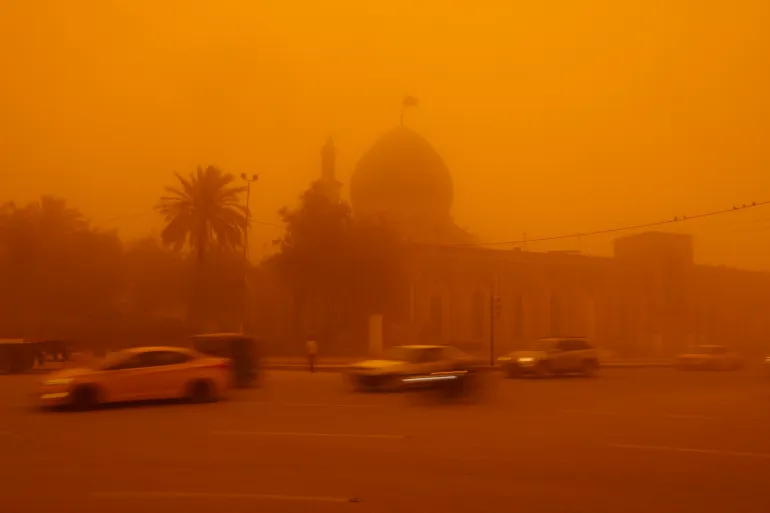

شكو ماكو : اخبار محلية متنوعة و جادة احيانا
آخر تحديث: جاري التحميل...
عاصفة ترابية العراق في 16 مايو/أيار 2022
اجتاحت العراق اليوم الاثنين عاصفة ترابية جديدة اضطرت معها السلطات إلى إغلاق مطارات ومدارس وجامعات ومؤسسات عامة في عدد من محافظات البلاد بما فيها العاصمة بغداد. تشير الدراسات العلمية والتقارير الرسمية إلى تصاعد خطير في حدة العواصف الغبارية في العراق. حذرت وزارة البيئة من احتمالية مواجهة العراق لنحو 272 إلى 300 يوم مغبر سنوياً في السنوات القادمة، مقارنة ببضعة عقود فقط في نهاية القرن الماضي.
وتعدّ هذه العاصفة الترابية الثامنة من نوعها منذ منتصف الشهر الماضي أبريل/ نيسان في العراق الذي يعاني تصحّرًا وجفافا شديدا، وقلة في الأمطار تأثرًا بتغيّر المناخ. .

ضربت عاصفة ترابية العراق في 16 مايو/أيار 2022. اجتاحت عاصفة ترابية معظم أنحاء العراق يوم الاثنين، مما أدى إلى نقل أكثر من 5000 شخص إلى المستشفيات بسبب مشاكل في الجهاز التنفسي، وأجبرت على إغلاق المطارات والمدارس وبعض المكاتب الحكومية.(رويترز)